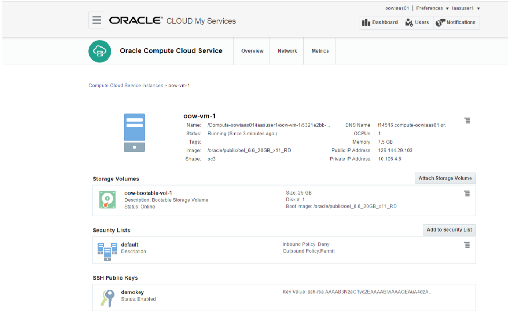
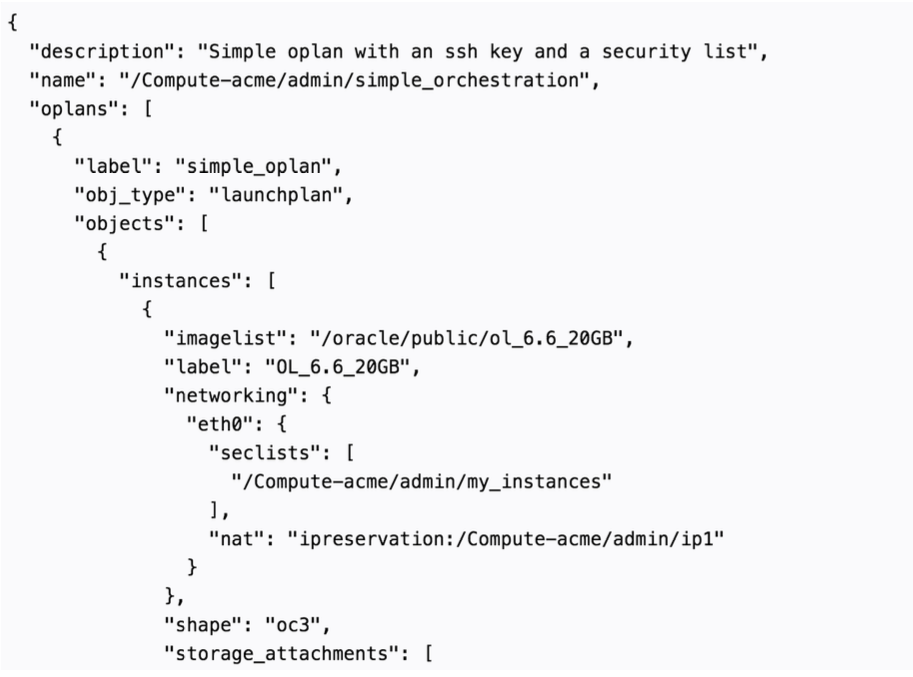

Compute Cloud Service
Elastic compute capacity to address growing business needs
Oracle Compute Cloud Service is an infrastructure as a service (IaaS) offering that provides flexible and scalable computing, block storage, and networking services on Oracle Cloud. You can now set up and manage your computing and storage workloads in the cloud, on demand, using a self-service portal. You’ll significantly reduce your computing costs and increase your business efficiency and agility. Use Oracle Compute Cloud Service to migrate your on-premises workloads to the cloud and reap the many cloud benefits.
Enterprise-Grade Infrastructure-as-a-Service (IaaS)
Finally, a cloud that is designed for your business-critical workloads! You can move your business-critical applications and other workloads into the cloud, while maintaining only the highest level of security, high-availability, flexibility, and control. Using Oracle Compute Cloud Service computing, storage, and networking, you can consume resources on demand. As a result, your Capex and personnel costs go down, and you gain high levels of scale and agility not possible in your on-premises environment.
You get access to Oracle Compute Cloud Service through the REST API, Python CLI, and a web-based UI.
- Easy to use and manage. Provision virtual machine (VM) instances in minutes through a self-service portal, on demand, and based on your business needs. Leverage preconfigured VM images or upload from your own on-premises VM images for faster provisioning. Use predefined launch plans and orchestrations for easy deployment of complex applications, ensuring high availability for the entire deployment.
- Enterprise-grade security. As the customer, you have complete control. You assign users into groups, along with their permissions, so that users’ activity and access are policy-based. You have complete visibility over resource usage and network traffic in the cloud, which gives you robust monitoring on the entire environment. Maintain the highest level of security in your cloud environment because the Oracle Compute Cloud Service powerful multitenancy features provide complete isolation between tenants in the cloud.
- Complete portability. Build a hybrid cloud with your on-premises environment and Oracle Compute Cloud Service, and then easily and securely move workloads between environments.
Elastic Computing
Your business needs are ever-changing, so too the requirements for the computing resources that support your business. With Oracle Compute Cloud Service, you enjoy the maximum flexibility to adapt to any workload changes by easily scaling up and down your computing resources based on your business demands.
-
Consume what you need. Launch VMs and block storage volumes through a self-service portal in minutes, using existing VM images or your own. VM instances can have various shapes (size and memory) based on your workload needs. Efficiently and rapidly scale your deployment up or down by provisioning and deprovisioning VMs based on your business needs.
Image 1: Instance details, storage attached and security definitions.
-
Orchestrate your application. You can launch a sequence of one or more VM instances and other system objects (storage volumes, networking, and so on) in an automatic manner, using a predefined, persistent JSON file. This file can contain elements such as shapes to be deployed for each VM, instance labels, security list membership, and DNS names.
Image 2: Creating an instance with an Orchestration JSON file.
- Recover active VM instances. Your application orchestration monitors all objects defined within it, maintaining high availability. If there’s a failure, then an automatic restart of the failed object on another computing node ensures that your application is successfully restored.
Flexible Configuration
Oracle Compute Cloud Service reduces the time required to obtain a virtual server to minutes, letting you rapidly scale up or down your deployment as dictated by changes in your business. You can launch instances with a variety of operating systems, manage your network permissions, and run your custom applications and workloads however you choose. You can select any configuration of CPU, memory, operating system, and so on, that are all optimized for your needs.
- Manage the life cycle. Oracle Compute Cloud Service provides advanced lifecycle management functionality. You can provision virtual machines using prepackaged images or build your own images, store data and applications in persistent block storage volumes, and use bootable storage volumes for OS-level persistence. Automate the provisioning and lifecycle operations of virtual computing topologies through your application orchestrations.
- Use virtual networking. You can connect to your environment through the Internet, accessing your Oracle Cloud resources from anywhere, or cross-connect over a private connection within a partner exchange.
- Control anti-affinity and OCPU pinning. You can control instance placement and distribute workloads using the Oracle Compute Cloud Service instance anti-affinity feature. You can also allocate Oracle CPUs to virtual machine instances, thereby avoiding oversubscription and deterioration in performance.
Secure Infrastructure
You have complete control over what’s being done in your account. Security lists and security rules let you control inbound and outbound networking communication to and from your instances.
- Control the security list. You can use a distributed and flexible firewall that allows the isolation of groups of objects (for example, VM instances and storage volumes) so that only specifically permitted communications are enabled. This distributed firewall operates on a flat network without the need for hard network partitioning. It isn’t restricted by location, and operates across the cloud (that is, regardless of nodes, racks, or sites).
- Define the security rules. You can connect to your environment through the Internet, accessing your Oracle Cloud resources from anywhere, or cross-connect over a private connection within a partner exchange.
- Connect site-to-site VPNs. Connect on-premises resources to dedicated computing zones in Oracle Cloud.
Dedicated Computing
You can get a virtual computing environment provisioned on isolated computing resources. Your computing zones will be completely dedicated to your usage (no other tenants on the hardware), with complete network isolation. Securely connect to your environment in the cloud using the site-to-site VPN feature.
- Oracle Compute Cloud Service: If you want dedicated computing that enjoys all the benefits of the cloud and experiences only the highest levels of security and reliable, predictable performance, but you want to avoid all those noisy tenants, then Oracle Compute Cloud Service is your solution.